20.05-22.052026
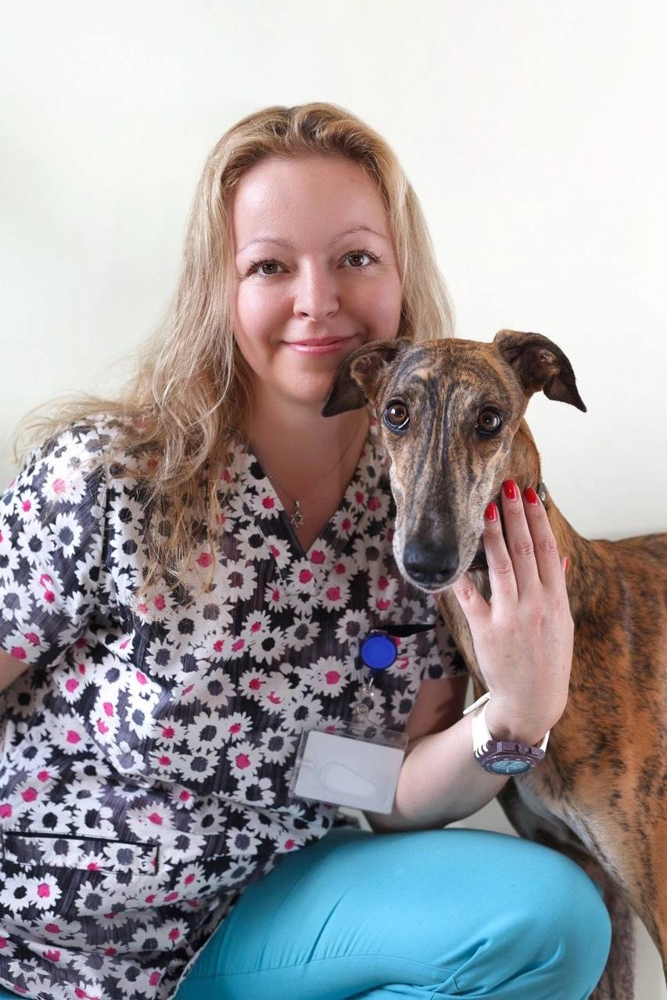
КорниловаКорнилова Наталья Валентиновна
- 20 мая – лекционный день по стоматологии
- 21 мая – мастер-класс по экстракциям зубов
- 22 мая – мастер-класс по винтальной пульпотомии и эндодонтии
Практические курсы, мастер-классы и лекции ведущих специалистов России.
Подход VETOC
Обучение строится вокруг реальных клинических задач: понятная теория, разбор случаев и отработка навыков под руководством практикующих врачей.
Анонс мероприятий 2026

Корнилова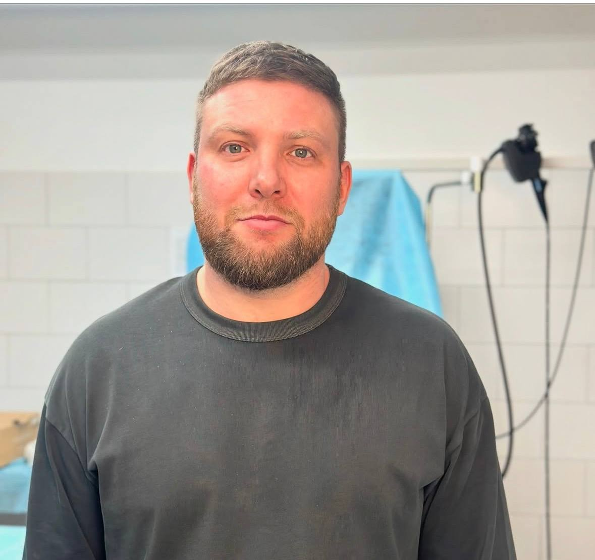
МамедкулиевЖизнь VETOC
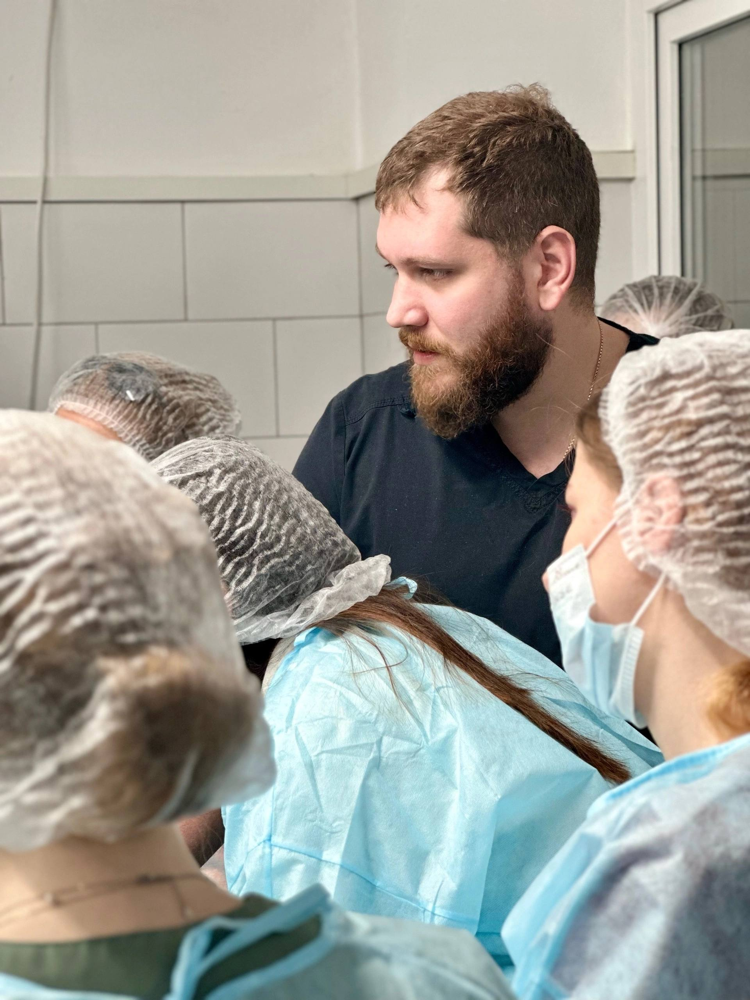
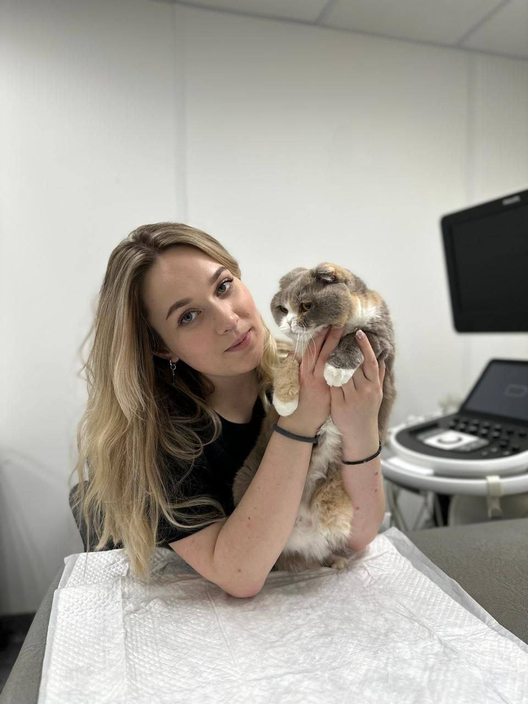
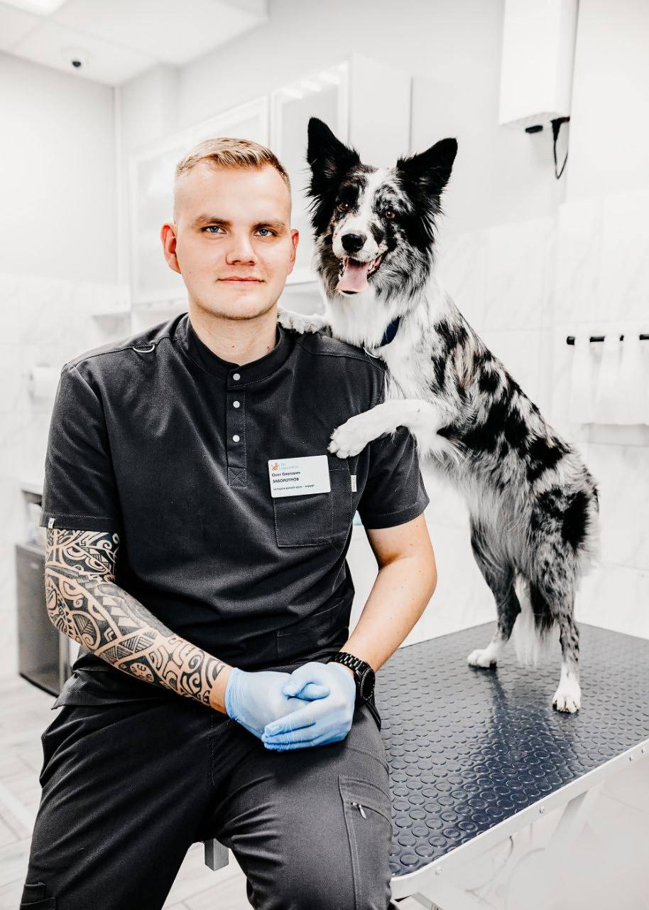
Мнение участников
Здесь будут собраны впечатления ветеринарных врачей после лекций и практических мастер-классов.
В этом разделе будут опубликованы фрагменты лекций, мастер-классов и разговоры с преподавателями.
Покажем учебные пространства, современное оборудование и атмосферу очного обучения.
Примеры официальных сертификатов VETOC будут добавлены в этот раздел.
Список проведённых мероприятий
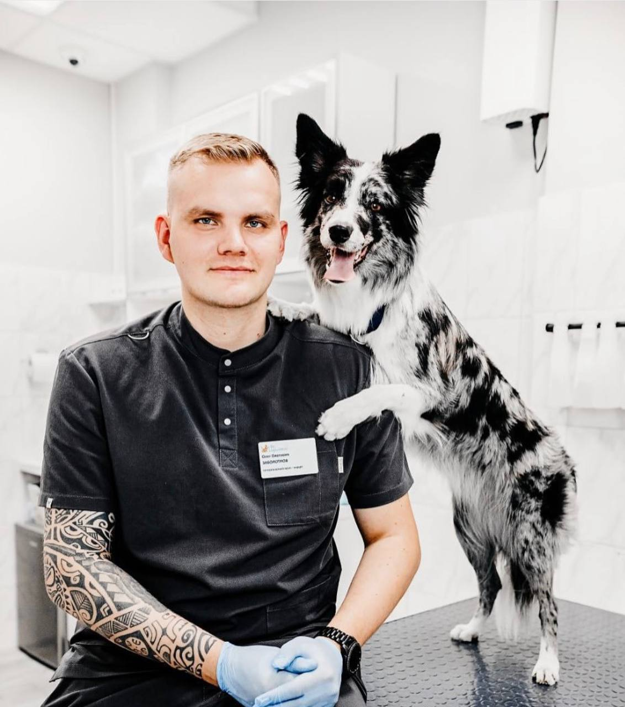
Заболотнов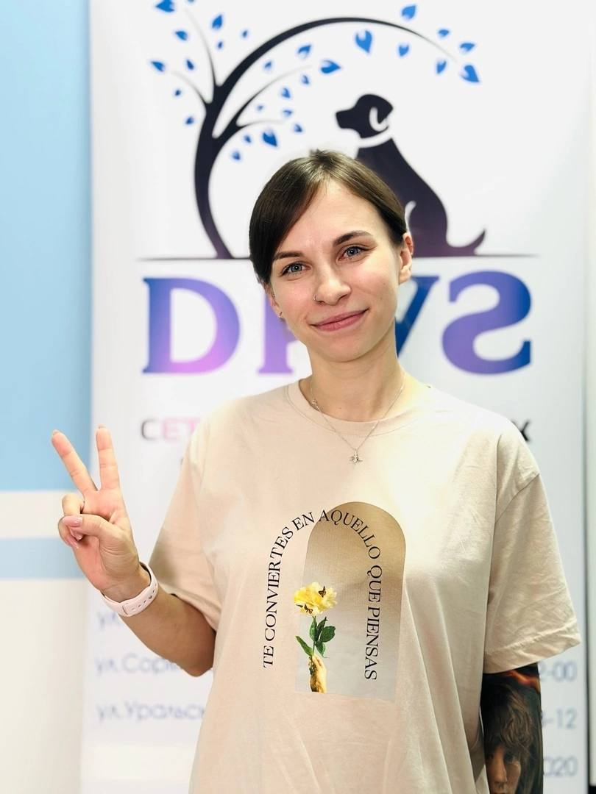
Лукьянова Алексеев
Алексеев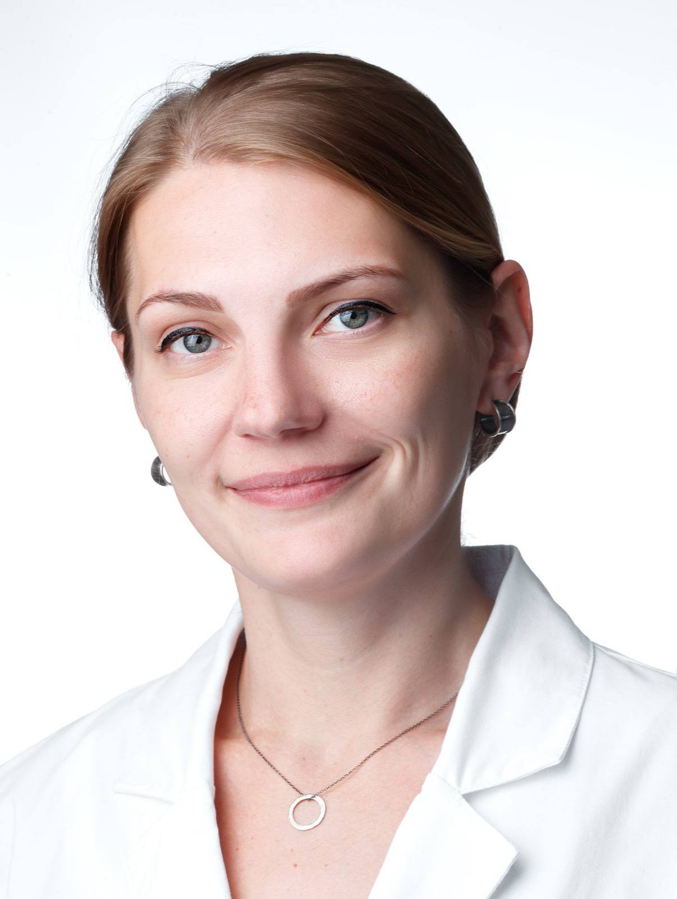
Фотченкова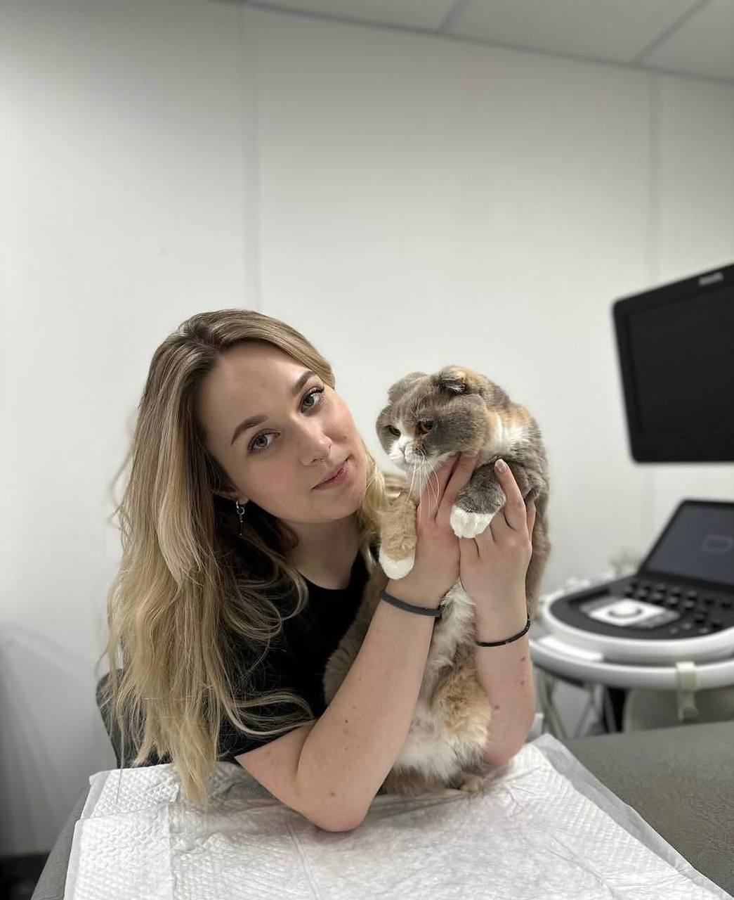
Вивчар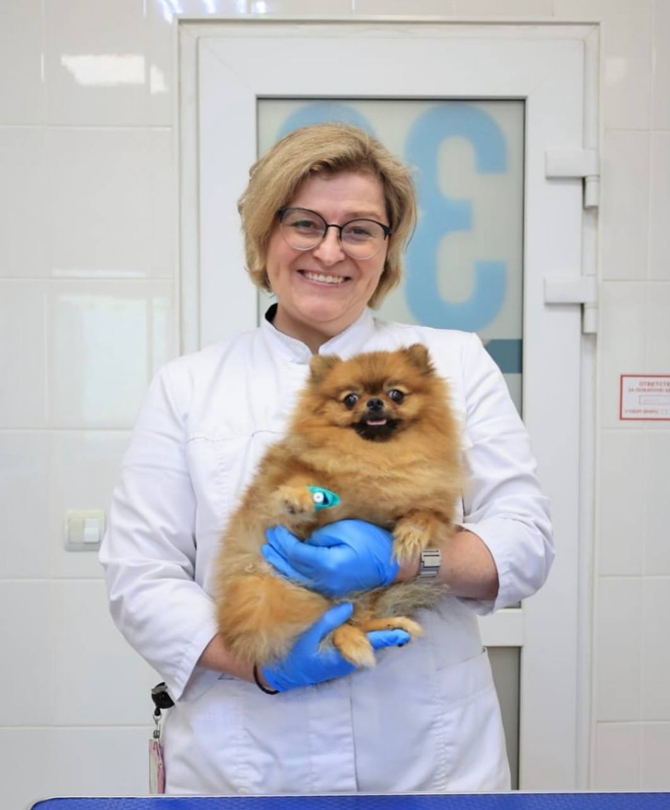
Пожарская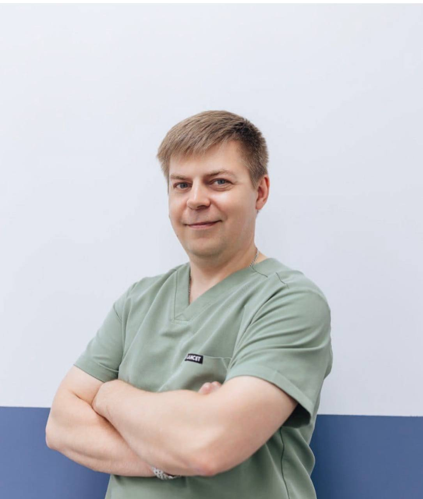
Суворов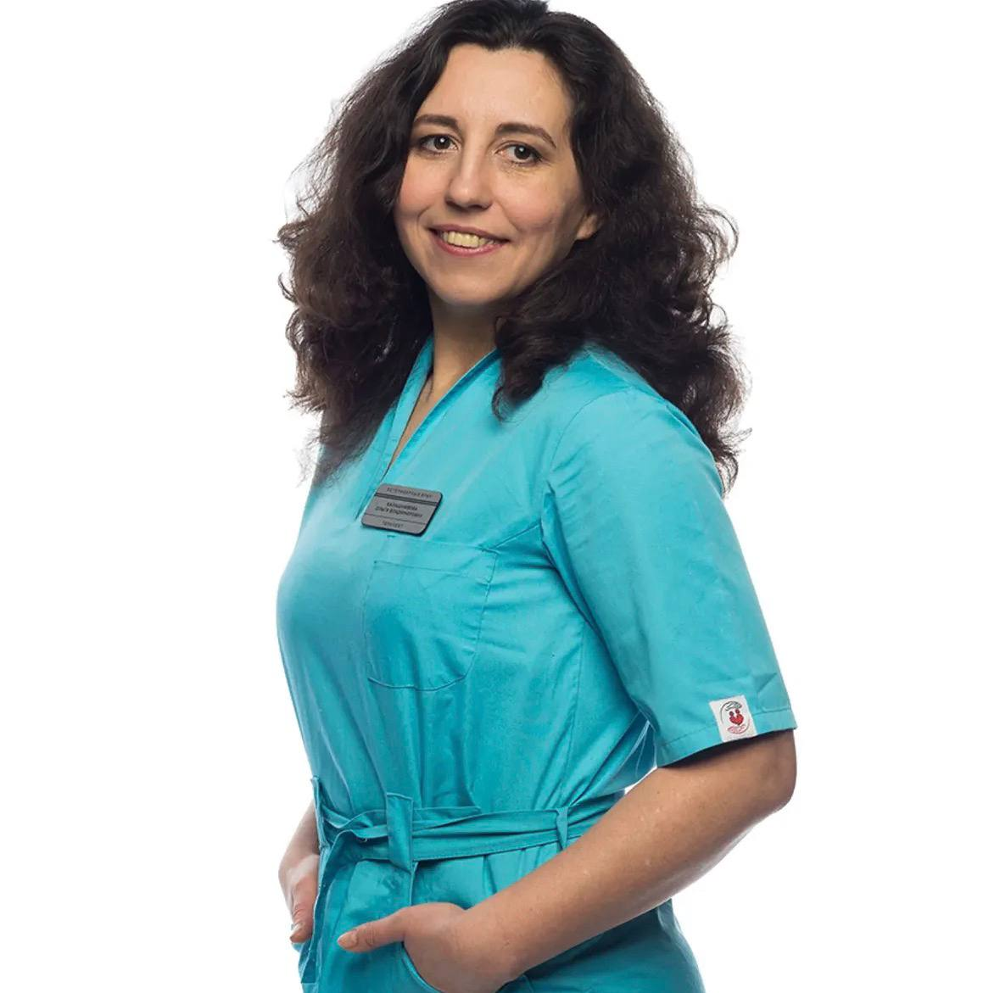
КалашниковаДокументы и оплата